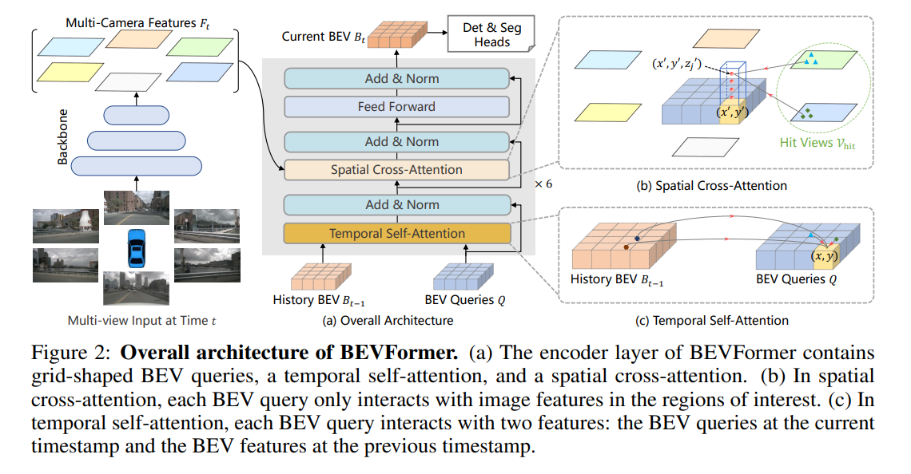
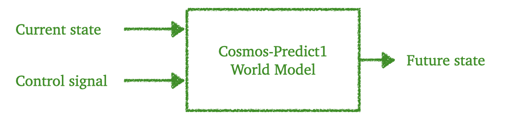
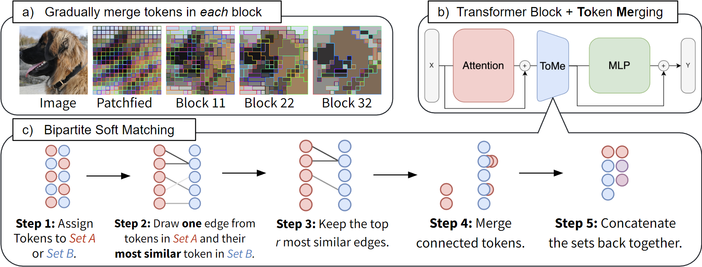
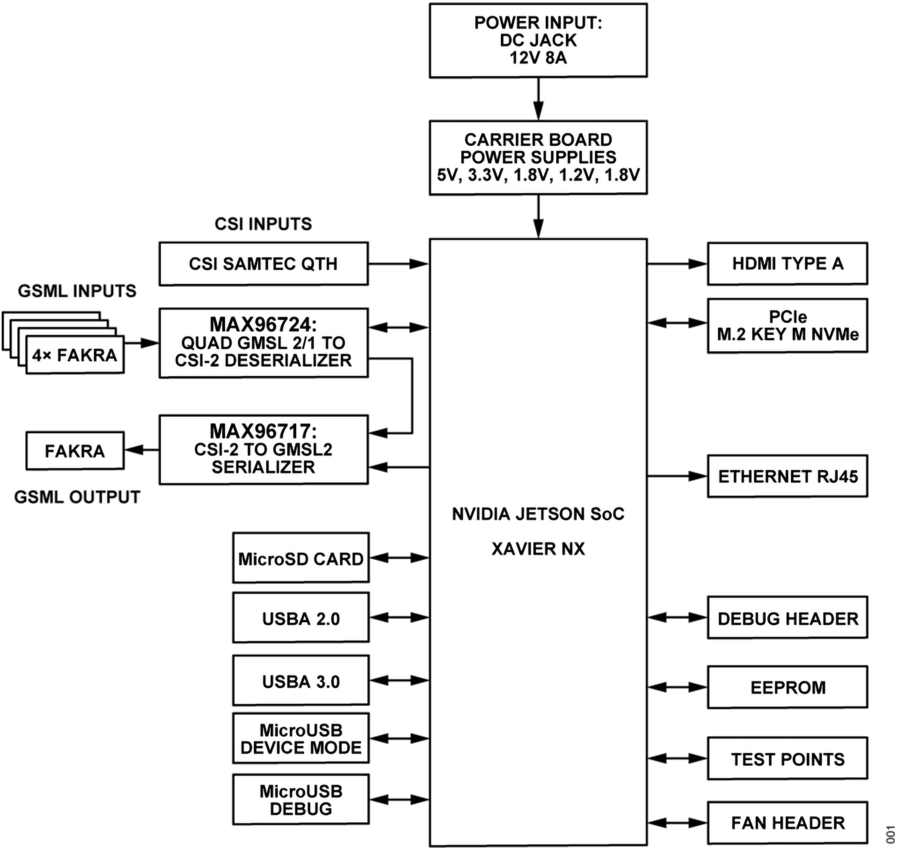

한 대의 차에 자율주행을 올리기까지 — 역사와 소프트웨어 스택, 개발 생태계, 그리고 그것을 실은 컴퓨터를 설계하는 사람들을 위한 통합 리포트
For Vehicle HPC Architecture Team · 2026-08
Chapter 0 · Overview
여정 지도 — 자율주행을 실차에 올리려면 무엇이 필요한가
"자율주행 모델을 하나 잘 학습시키면 차가 스스로 달린다"는 생각은 절반만 맞습니다. 학습된 모델은 출발점일 뿐이고, 그 모델이 실제 도로 위의 차에서 매초 안전하게 동작하기까지는 최적화, 하드웨어, 소프트웨어 플랫폼, 차량 네트워크, 기능안전, 인증, 그리고 양산 후의 데이터 루프라는 여러 관문이 있습니다. 이 보고서 전체가 아래 지도 하나를 따라갑니다.
그림 0-1. 자율주행 실차 탑재 여정 지도. 이 보고서의 각 장은 이 지도의 한 구간씩을 맡는다. 마지막 ⑧이 다시 ①로 이어진다는 점 — 자율주행 개발이 일직선이 아니라 돌고 도는 루프라는 점이 이 보고서의 가장 중요한 메시지다.
우리 팀이 설계하는 HPC는 이 지도의 ③에 위치하지만, 나머지 모든 단계가 HPC에 요구사항을 던집니다. 모델 트렌드(①)는 연산량과 메모리 대역폭을, 최적화 기법(②)은 저정밀 연산 유닛을, 소프트웨어 플랫폼(④)은 파티셔닝과 격리를, 안전·인증(⑥)은 이중화와 감시 회로를, 그리고 데이터 루프(⑧)는 로깅 대역폭과 컴퓨트 헤드룸을 요구합니다. 그래서 HPC 설계자는 자기 담당 구간만이 아니라 지도 전체를 알아야 합니다. 이것이 이 스터디의 목적입니다.
Part I
이해 — 자율주행이라는 문제
역사에서 출발해, 자율주행 소프트웨어가 어떻게 구성되고, 최신 AI 모델이 어디로 가고 있으며, 그 모델들이 어떤 개발 생태계 위에서 만들어지는지를 다룹니다.
Chapter 1 · Part I
자율주행의 진화와 현재
여정에서의 위치 — 출발 전 지형 파악. 우리가 차에 올리려는 "자율주행"이 무엇이고, 20년 동안 어떤 길을 걸어 지금 어디에 서 있는지부터 짚는다.
Now · 2026
Waymo는 2025년 12월 주간 유료 무인 주행 45만 회를 넘겼고 2026년 말 100만 회를 목표로 하고 있다 (CNBC). 중국은 2025년 12월 승용차 L3 판매를 세계 최초로 허가했다 (CnEVPost). 한편 L3의 선구자였던 Mercedes와 BMW는 2026년 초 나란히 L3 옵션을 접고 L2++로 회귀했다 (electrive). 신차의 66%가 이미 ADAS를 달고 나오고, EU는 2024년 7월부터 AEB 등 ADAS를 전 신차에 의무화했다 (Counterpoint, Thatcham). — 자율주행·고도화 ADAS는 더 이상 미래 기술이 아니라 지금 양산차 아키텍처의 전제 조건이다.
1.1 먼저 용어부터 — "자율주행 레벨"이란
자율주행 이야기에는 "L2다, L3다"라는 말이 계속 나옵니다. 이것은 미국 자동차공학회(SAE)가 정의한 운전 자동화 6단계(SAE J3016)로, 핵심 구분 기준은 성능이 아니라 "운전 책임이 누구에게 있는가"입니다.
그림 1-1. SAE J3016 자동화 레벨. 계단이 높아질수록 "시스템이 책임지는 범위"가 넓어진다. L2까지는 아무리 잘 달려도 법적으로는 운전자 보조이고, L3부터 시스템이 조건부로 운전 책임을 진다 — 이 한 칸의 차이가 하드웨어 설계(이중화·인증)를 완전히 바꾼다.
용어 — ODD (Operational Design Domain, 운행설계영역)
시스템이 안전하게 작동하도록 설계된 조건의 집합. "고속도로에서, 주간에, 시속 95km 이하로, 비가 오지 않을 때"처럼 자율주행 기능이 유효한 범위를 정의합니다. L3/L4는 반드시 ODD와 함께 정의되며, ODD를 벗어나면 운전자에게 제어를 돌려주거나(L3) 스스로 안전하게 정지해야(L4) 합니다.
1.2 20년의 역사 — 사막의 레이스에서 로보택시까지
자율주행의 출발점으로 흔히 꼽히는 장면은 2004년 모하비 사막입니다. 미 국방연구기관 DARPA가 상금 100만 달러를 걸고 240km 무인차 경주(Grand Challenge)를 열었는데, 완주한 차량이 한 대도 없었습니다. 최고 기록조차 12km 남짓이었죠 (Smithsonian).
그러나 겨우 1년 뒤인 2005년, 스탠퍼드 팀의 Stanley(폭스바겐 투아렉 개조)가 212km를 6시간 53분에 완주하며 우승합니다. Stanley의 승리 비결은 더 좋은 센서가 아니라 머신러닝이었습니다 — 사람이 규칙을 일일이 코딩하는 대신, "주행 가능한 지형"을 데이터로 학습시킨 것이 결정적이었습니다. 규칙 기반에서 학습 기반으로의 첫 전환점입니다 (Wikipedia, Stanford).
2007년 Urban Challenge(시가지 주행, CMU Boss 우승)를 끝으로 DARPA 대회는 막을 내렸지만, 이 대회 출신들이 이후 Google 자율주행 프로젝트(2009, 훗날 Waymo), Cruise, Aurora 등을 만들며 산업의 씨앗이 됩니다 (CMU).
같은 시기, 조용한 상용화 — Mobileye
화려한 무인차 경주와 별개로, 이스라엘의 Mobileye는 1999년부터 카메라 한 대와 전용 칩(EyeQ)만으로 차선·차량을 인식하는 ADAS를 만들어 2007년부터 BMW·GM·볼보에 양산 공급했습니다. "완전 자율"이 아니라 "지금 팔 수 있는 보조 기능"부터 쌓아 올린 이 노선은 현재 ADAS 시장의 약 70%, 누적 1.7억 대 탑재라는 결과로 이어졌습니다 (Mobileye). — 자율주행 산업에는 처음부터 "혁명파(로보택시)"와 "점진파(ADAS 고도화)"의 두 갈래가 있었고, 이 구도는 지금도 유효합니다.
2004–07DARPA 챌린지 — 2004 완주 0대 → 2005 Stanley 우승(ML 도입) → 2007 시가지 주행(Boss). 산업 인력의 요람이 됨
2009Google 자율주행 프로젝트 시작 (Prius + LiDAR). 2016년 Waymo로 독립
2015Tesla Autopilot 1.0 — 고속도로 조향+속도 보조를 일반 양산차에 OTA로 배포한 첫 사례 (CR)
2017Audi A8 L3 시도와 좌절 — 세계 최초 L3 양산 설계였지만 법규·형식승인 틀이 없어 한 번도 활성화되지 못하고 2020년 철회. "기술이 아니라 인증이 병목"이라는 교훈을 남김 (Motor1)
2020–21무인 상용화·L3 인증 원년 — Waymo 피닉스 완전 무인 서비스(2020), Honda Legend 세계 최초 L3 형식승인(2021.3, 일본), Mercedes Drive Pilot UN-R157 기반 세계 최초 국제 유효 L3 승인(2021.12, 독일 KBA)
2023–24Cruise의 몰락 — 2023.10 보행자 끌림 사고와 정보 은폐로 캘리포니아 허가 정지, 2024.12 GM 로보택시 사업 철수. 기술 완성도만큼 규제기관과의 신뢰가 사업 존속을 좌우함을 보여줌 (WardsAuto)
2025스케일링의 해 — Waymo 주간 45만 회, Baidu Apollo Go 주간 무인 25만 회·누적 1,700만 주문, Tesla Robotaxi 오스틴 개시(6월), 중국 승용차 L3 판매 최초 허가(12월)
2026노선 재편 — Mercedes·BMW가 L3 옵션 중단(수요 부족·LiDAR 비용·좁은 ODD) 후 L2++ 회귀. 시장은 "L2++ 대중화"와 "L4 로보택시"로 양분되고, L3의 무게중심은 중국으로 이동 (electrive)
1.3 기술 패러다임의 다섯 번의 전환
역사를 기술 관점으로 다시 자르면, 자율주행 소프트웨어는 지금까지 다섯 번 다시 만들어졌습니다. 각 전환은 그대로 차량 컴퓨터 요구 사양의 점프였습니다.
그림 1-2. 다섯 번의 패러다임 전환. 2012년 AlexNet이 이미지 인식 대회를 압도한 뒤 자율주행 인식은 CNN으로 전면 전환됐고, 2021년 이후로는 3~4년 간격이 아니라 1~2년 간격으로 세대가 바뀌고 있다. 각 세대의 내용은 3장에서 자세히 다룬다.
컴퓨트 요구의 관점에서 보면: Mobileye EyeQ 시대의 수 TOPS → NVIDIA Orin의 254 TOPS(2022) → Thor의 1,000 TOPS(2025) → XPeng 로보택시급의 ~3,000 TOPS(Turing 칩 4개)로, 약 15년 사이 세 자릿수가 늘었습니다 (KrASIA). 반면 뒤에서 보겠지만 메모리 대역폭은 그만큼 늘지 못했고, 이것이 6장의 핵심 주제가 됩니다.
HPC 설계 시사점
모델 세대교체 주기(1~2년) < 차량 하드웨어 수명(5~10년). 우리가 설계하는 플랫폼은 출시 시점의 모델이 아니라 두세 세대 뒤의 모델까지 감당할 헤드룸이 필요하다 — Audi A8의 교훈(하드웨어를 실어도 못 쓰는 상황)과 반대로, Tesla HW3처럼 하드웨어가 모델을 못 따라가는 상황도 피해야 한다.
L3가 분기점. L2++까지는 "성능 좋은 컴퓨터"면 되지만, L3부터는 법적 책임 이동 때문에 이중화·인증이 하드웨어 요구사항으로 들어온다(10장). 어느 레벨을 목표로 하는 플랫폼인지가 아키텍처를 가른다.
시장은 L2++ 대중화 + L4 로보택시의 이원 구조로 재편 중. 전자는 비용(원칩 통합, 저전력), 후자는 성능·이중화가 지배 요구사항 — 같은 회사 제품군에서도 두 아키텍처가 갈린다.
Chapter 2 · Part I
고전 AD 파이프라인 — 차는 어떻게 스스로 달리는가
여정에서의 위치 — ① 모델 개발의 출발점. 최신 End-to-End 모델을 이해하려면, 그것이 대체하고 있는 "고전적 구조"부터 알아야 한다. 그리고 이 구조는 지금도 Waymo를 포함한 대부분의 양산 시스템의 뼈대다.
Now
"모듈형 파이프라인은 끝났다"는 말이 유행하지만 현실은 다릅니다. Waymo·Mobileye·국내외 대부분의 양산 ADAS는 여전히 모듈형 구조(또는 모듈형+신경망 하이브리드) 위에서 달리고 있고, End-to-End를 전면에 내건 Tesla조차 안전 감시 계층은 별도 로직으로 유지합니다. 모듈형 구조는 "각 부분을 따로 검증할 수 있다"는 기능안전 관점의 장점 때문에 쉽게 사라지지 않습니다.
2.1 여섯 개의 모듈 — 사람의 운전에 비유하면
사람이 운전할 때를 생각해 봅시다. ① 눈으로 보고(감지), ② 본 것이 차인지 사람인지 알아보고(인지), ③ 내가 지금 도로 어디에 있는지 알고(측위), ④ 저 차가 끼어들 것 같다고 짐작하고(예측), ⑤ 그래서 속도를 줄이기로 하고(계획), ⑥ 브레이크를 밟습니다(제어). 고전적 자율주행 파이프라인은 정확히 이 순서를 소프트웨어 모듈로 옮긴 것입니다.
그림 2-1. 고전적 AD 파이프라인. 중요한 것은 각 모듈이 서로 완전히 다른 종류의 연산이라는 점 — 그래서 자율주행 컴퓨터는 처음부터 여러 종류의 프로세서를 섞은 이기종(heterogeneous) 구조가 될 수밖에 없다.
각 모듈이 실제로 하는 일과 연산 특성
모듈
하는 일 (쉽게)
대표 연산
어떤 하드웨어를 압박하나
Sensing
카메라·LiDAR·레이더의 원시 신호를 쓸 수 있는 데이터로 다듬기
debayer, HDR 합성, 렌즈 왜곡 보정, 포인트클라우드 조립
고정 기능 ISP/DSP. 연산보다 스트리밍 I/O 대역폭이 병목
Perception
"저건 차, 저건 사람, 저건 차선"
신경망 추론 (CNN, 최근엔 BEV Transformer)
GPU/NPU — 곱셈누산(MAC) 대량. 해상도가 오르면 연산량 급증
Tracking/Fusion
여러 센서의 관측을 하나의 객체로 묶고 추적
Kalman filter, Hungarian matching
작은 행렬·분기 많음 → CPU/DSP, 지연에 민감
Localization
"나는 지금 이 차선의 이 지점에 있다" (GPS 오차 ±수 m로는 부족 — cm급 필요)
자율주행 소프트웨어의 성능은 "얼마나 정확한가"만큼 "얼마나 빨리 한 바퀴 도는가"로 정의됩니다. 카메라에 빛이 들어온 순간부터 브레이크가 움직이기까지의 시간(end-to-end latency)이 사람의 반응속도보다 빨라야 한다는 논리로, 업계는 통상 한 사이클 100ms(초당 10회)를 예산으로 잡습니다 (ASPLOS 2018, arXiv:2207.08930 — Mobileye도 100ms 예산 사용 인용).
이 주제의 고전 논문인 미시간대의 ASPLOS 2018 연구는 실제 자율주행 스택을 프로파일링해서 세 가지 중요한 사실을 실측으로 보였습니다:
측위·인지·추적 세 모듈이 전체 지연을 지배하며, 멀티코어 CPU만으로는 100ms를 맞출 수 없다.
GPU는 빠르지만 전력·발열이 주행거리를 갉아먹는다. 그리고 카메라를 Full HD에서 Quad HD로 올리는 순간, 당시 어떤 하드웨어 조합으로도 실시간 처리가 불가능했다 — "센서 해상도의 이득을 컴퓨트가 막는" 상황.
용어 — p99 (tail latency, 꼬리 지연)
100번 중 99번째로 느렸던 실행 시간. 평균이 50ms여도 가끔 200ms가 튀면 그 한 번이 사고가 됩니다. 그래서 자율주행에서는 평균이 아니라 최악에 가까운 경우(p99)의 지연이 안전을 결정한다는 것이 정설입니다 (COLA). 하드웨어 관점에서 이것은 "평균 처리량"이 아니라 "결정성(predictability)"을 설계 목표로 삼아야 한다는 뜻입니다.
HPC 설계 시사점
모듈형 스택은 "GPU/NPU(인지) + 실시간 CPU 클러스터(계획·제어) + 안전 코어(lockstep)"의 이기종 구성을 강제한다. 어느 하나의 프로세서 유형으로는 성립하지 않는다.
모듈 사이를 흐르는 데이터(카메라 프레임, BEV 특징맵, 포인트클라우드)가 온칩 패브릭과 메모리 대역폭을 소모한다 — 연산기만큼 인터커넥트 설계가 중요하다.
지연 예산은 모듈별로 쪼개져 배분된다. 우리 플랫폼 위 소프트웨어의 p99 지연을 보장하려면 캐시·메모리 QoS 같은 결정성 메커니즘이 필요하다(9장 FFI와 연결).
Chapter 3 · Part I
최신 AI 모델 트렌드 — BEV에서 VLA까지
여정에서의 위치 — ① 모델 개발. 지금 차에 실리고 있는, 그리고 2~3년 안에 실릴 모델들이 우리 하드웨어에 어떤 연산을 요구하는지 본다. 결론부터: 워크로드의 성격 자체가 바뀌고 있다.
Now · 2025–26
Tesla FSD v13은 이전 버전 대비 모델 크기 3배·학습 컴퓨트 5배로 커졌고 (Creative Strategies), XPeng은 300억 파라미터 VLA 모델을 차 안에서 직접 실행하겠다며 자체 칩 3개(2,250 TOPS)를 실었습니다. Volkswagen이 이 기술의 첫 라이선스 고객이 됐습니다 (XPeng). 중국 시장은 사실상 End-to-End로 전면 전환했고(Momenta가 도심 주행보조 솔루션의 60% 공급), BMW 차세대 iX3에도 중국산 E2E 모델이 실립니다 (Recode China AI).
3.1 기반 지식 — CNN과 Transformer, 무엇이 다른가
이 장을 이해하는 데 필요한 배경 지식은 딱 하나, "CNN에서 Transformer로의 전환이 왜 하드웨어 관점에서 중요한가"입니다. 그림으로 보겠습니다.
그림 3-1. CNN과 Transformer의 하드웨어 관점 차이. CNN은 데이터 재사용률이 높아 연산기가 바쁘고(→ TOPS가 성능을 결정), Transformer 계열 — 특히 한 글자씩 생성하는 LLM/VLA 추론 — 은 메모리에서 데이터를 실어 나르는 시간이 지배한다(→ GB/s가 성능을 결정). 이 차이가 6장의 핵심 논점이 된다.
3.2 BEV + Transformer — 세상을 위에서 내려다보기 (2021~)
카메라는 여러 대가 각자 다른 방향을 봅니다. 고전적 방식은 카메라마다 따로 인식하고 결과를 나중에 합쳤는데, 경계 영역에서 오류가 잦았습니다. 2021년 전후 등장한 BEV(Bird's-Eye-View) 방식은 발상을 바꿔, 여러 카메라 영상을 신경망 안에서 곧바로 하나의 탑뷰(위에서 내려다본) 공간으로 변환해 그 위에서 인식합니다. 마치 미니맵을 만들어 놓고 게임을 하는 것과 같습니다.
이 변환에 Transformer의 attention이 쓰입니다. 대표 논문 BEVFormer(ECCV 2022)는 BEV 격자의 각 칸이 "내가 어느 카메라의 어느 픽셀을 봐야 하지?"를 attention으로 배우게 했습니다 (arXiv:2203.17270). 실측 배포 성능은 TensorRT FP16 최적화 후 약 90ms, 경량 구성으로 25ms까지 내려갑니다 (MulticoreWare).
같은 계열의 확장이 Occupancy Network입니다. "차/사람/자전거"처럼 종류를 아는 물체만 찾는 대신, 공간을 작은 정육면체(voxel)로 나눠 "이 칸이 비어 있나, 차 있나"만 판단합니다. 종류를 몰라도(쓰러진 나무, 떨어진 화물) 피할 수 있게 되는 것이죠. Tesla는 이를 FSD 컴퓨터에서 약 10ms에 실행한다고 알려져 있습니다 (arXiv:2303.01212).
그림 3-2. BEV 개념 — 여러 카메라의 시점을 신경망 안에서 하나의 탑뷰 지도로 변환한다.

그림 3-3. BEVFormer의 실제 아키텍처 — BEV 쿼리가 spatial cross-attention으로 멀티카메라 특징을, temporal self-attention으로 과거 BEV를 참조한다. 출처: BEVFormer 공식 리포지토리 (ECCV 2022)
하드웨어 관점의 주의점 하나: BEV 변환에 쓰이는 deformable attention은 메모리를 불규칙하게 접근하기 때문에 고정된 연산 패턴에 최적화된 NPU와 궁합이 나쁩니다. 그래서 커스텀 연산 없이 표준 연산만으로 BEV를 만드는 "배포 친화적 설계"(Fast-BEV 계열)가 별도의 연구 흐름으로 존재합니다 (Fast-BEV) — 모델 설계가 하드웨어 지원 여부에 좌우되는 시대가 이미 왔다는 뜻입니다.
3.3 End-to-End — 모듈의 벽을 허물다 (2023~)
2장의 모듈형 파이프라인에는 구조적 약점이 있습니다. 인지 모듈은 "인식 정확도"로, 계획 모듈은 "경로 품질"로 각자 최적화되다 보니, 정작 최종 목표인 "운전을 잘한다"로 전체가 함께 최적화되지 않는다는 점입니다. 모듈 사이에서 정보도 손실됩니다(인지가 "차량, 신뢰도 0.87"로 요약해 넘기는 순간, 계획은 그 이상을 알 수 없습니다).
End-to-End(E2E)는 센서 입력에서 주행 출력까지를 하나의 신경망으로 잇고, 전체를 운전 성능으로 함께 학습시키는 접근입니다. 학계 이정표는 CVPR 2023 최우수논문 UniAD — 인지·추적·지도·예측·계획을 모두 Transformer 쿼리로 연결하되, 모든 모듈이 "계획을 잘하기 위해" 존재하도록 설계했습니다 (arXiv:2212.10156).
산업 이정표는 Tesla FSD v12(2024)입니다. 규칙 기반 C++ 코드 약 30만 줄을 신경망으로 대체했고, v13(2024년 말)에서는 모델 크기·컨텍스트 3배, 학습 컴퓨트 5배로 커졌습니다. 커뮤니티 분석 기준 주행 신경망의 메모리 사용량은 v12 약 2.3GB → v13 약 7.5GB(추정)로 늘었고, 이 격차 때문에 구형 컴퓨터(HW3)에서는 v13이 실행되지 못합니다 (shop4tesla) — 모델 성장 속도가 하드웨어 교체 주기를 앞지른 실제 사례입니다.
E2E 모델은 쪼갤 수 없습니다. 모듈형이라면 인지는 이 칩, 계획은 저 칩에 나눠 실을 수 있지만, 단일 신경망은 하나의 큰 가속기 메모리 공간을 요구합니다. 또한 내부가 블랙박스라 "왜 그렇게 판단했는지" 설명이 어려워, 안전 논증을 위한 별도 감시 계층(10장)이 필요해집니다.
3.4 VLA와 World Model — 2025년의 두 갈래 (그리고 "fast + slow")
2025년 이후의 최전선은 두 노선으로 갈립니다. 하나는 VLA(Vision-Language-Action) — 대형 언어모델(LLM)의 "이해하고 추론하는" 능력을 주행에 이식해, 카메라 영상(Vision)을 보고 상황을 언어적으로 추론(Language)한 뒤 주행 행동(Action)을 출력하는 모델입니다. "공사 구간이라 차선이 지워졌지만 라바콘을 따라가야 한다" 같은, 규칙에 없는 상황(long-tail)에 강한 것이 장점입니다. XPeng VLA 2.0(30B, VW 라이선스), Li Auto MindVLA가 대표입니다.
다른 하나는 World Model — "세상이 다음에 어떻게 변할지"를 통째로 예측하는 모델로, Huawei ADS 4.0이 "언어를 거치는 것은 우회"라며 이 노선을 택했습니다 (ChinaEVHome). World Model은 4장에서 보듯 시뮬레이터로서의 역할이 더 큽니다.
여기서 실차 탑재의 결정적 문제가 등장합니다. LLM은 느립니다. Li Auto가 실차(Orin 2개)에서 측정한 VLM 추론 지연은 평균 410ms — 초당 10회 돌아야 하는 제어 루프에 들어갈 수 없는 속도입니다 (DriveVLM, arXiv:2402.12289).
업계의 해법은 사람의 인지처럼 "빠른 직관 + 느린 숙고"의 이중 시스템입니다. 10Hz 이상으로 도는 가벼운 E2E 모델(fast path)이 실제 운전을 담당하고, 크고 느린 VLM/VLA(slow path)는 1~2Hz로 돌며 어려운 상황에 대한 판단과 힌트를 비동기로 공급합니다. Li Auto는 실제로 Orin 두 개에 fast/slow를 나눠 실었습니다.
이 구조가 하드웨어에 요구하는 것
fast path에는 결정론적 지연(p99 보장), slow path에는 LLM형 연산(대용량 메모리, KV cache, 저정밀). 이 둘을 한 칩에 실으려면 서로 간섭하지 않게 하는 파티셔닝·QoS가 필수다(9장 FFI). 두 칩에 나누면 파티셔닝은 쉬워지지만 칩 간 대역폭이 병목이 된다(8장).
HPC 설계 시사점 — 3장 종합
워크로드의 성격이 이동 중: CNN 시대의 "TOPS 부족" 문제에서, Transformer/VLA 시대의 "메모리 대역폭 부족" 문제로 (정량 근거는 6장).
모델-하드웨어 공동 설계: deformable attention처럼 하드웨어 비친화적 연산이 배포를 좌우 — 플랫폼의 연산자 커버리지가 채택 경쟁력(5장 컴파일러와 연결).
Chapter 4 · Part I
자율주행은 모델만이 아니다 — 개발 생태계 전체
여정에서의 위치 — ①과 ⑧을 잇는 폐루프. 모델은 "만들어지는 것"이 아니라 "길러지는 것"이다. 데이터 수집 → 라벨링 → 학습 → 시뮬레이션 검증 → 배포 → 다시 데이터 수집으로 돌아가는 루프 전체가 진짜 제품이며, 차량 컴퓨터는 이 루프의 한 노드다.
Now · NVIDIA Alpamayo가 보여준 그림
NVIDIA는 2025년 말~2026년에 걸쳐 Alpamayo를 발표하면서 모델 하나가 아니라 생태계 전체를 내놓았습니다: 추론하는 주행 모델(Alpamayo-R1, 10B) + 25개국 1,700시간 주행 데이터셋 + 시뮬레이터(AlpaSim) + 강화학습 프레임워크(AlpaGym)를 전부 오픈소스로 공개하고, 이것을 "학습 컴퓨터(DGX) → 시뮬레이션 컴퓨터(Omniverse/Cosmos) → 차량 컴퓨터(DRIVE Thor)"라는 3-컴퓨터 구조로 묶었습니다 (NVIDIA, CES 2026, arXiv:2511.00088). 메시지는 분명합니다 — 자율주행의 경쟁력은 모델이 아니라 개발 루프 전체에서 나온다. 이 장은 그 루프를 하나씩 뜯어봅니다.
4.1 데이터 엔진 — Tesla가 보여준 원형
모델의 성능은 결국 데이터가 결정합니다. 그런데 도로에서 정말 중요한 데이터 — 갑자기 뛰어드는 보행자, 역주행 차량, 도로 위의 쓰러진 나무 — 는 수백만 km를 달려야 한 번 만나는 희귀 사건(long-tail)입니다. 이 문제를 시스템으로 푼 것이 Tesla의 "데이터 엔진"입니다.
그림 4-1. 데이터 엔진 폐루프. 핵심은 ①과 ⑥ — 도로 위의 양산차 전체가 데이터 수집기이자 시험대라는 점이다. Tesla FSD 플릿의 누적 주행은 2026년 5월 100억 마일을 넘었고, 하루 약 2,900만 마일씩 쌓인다 (Electrek).
트리거 기반 수집: 양산차의 데이터를 전부 올릴 수는 없습니다(대역폭·비용). 대신 "예측과 실제가 어긋난 순간" 등 200개 이상의 조건(트리거)을 차 안에서 감지해, 조건에 맞는 약 10초짜리 클립만 업로드합니다. 특정 상황(예: 끼어들기)의 개선이 필요하면 플릿 전체에 해당 트리거를 배포해 며칠 만에 수천 개의 사례를 모읍니다 (Data-Centric Survey).
Shadow mode: 새 모델 후보를 고객 차량에 제어권 없이 병렬로 실행시켜, 현재 모델과 판단이 갈리는 순간을 수집합니다. 실차 검증을 위험 없이 대규모로 하는 방법입니다.
자동 라벨링(auto-labeling): 사람이 일일이 정답을 그려주는 대신, 차에서는 못 돌리는 초대형 offline 모델(teacher)이 시간을 거꾸로도 보고(미래 프레임 참조) 여러 센서를 합쳐 고품질 정답을 만들어, 차에 실릴 작은 모델(student)을 가르칩니다. Tesla는 1만 대 트립 라벨링에 사람 손으로 500만 시간 걸릴 일을 클러스터 12시간으로 대체했다고 발표했고 (AI Day 2022), NVIDIA Alpamayo 2도 같은 teacher→student 증류 구조를 공식 워크플로로 제시합니다 (NVIDIA).
Active learning: 모아둔 방대한 무라벨 데이터 중 "모델이 가장 헷갈려하는 것"부터 골라 라벨링합니다. NVIDIA는 야간 보행자 검출에서 무작위 선별 대비 3배의 정확도 개선 효율을 A/B 테스트로 입증했습니다 (NVIDIA).
그림 4-2. 파운데이션 모델을 활용한 라벨링 자동화의 예 — Meta의 SAM(Segment Anything)은 1,100만 장·10억 개 마스크로 학습되어, 어떤 이미지든 객체 경계를 자동 분할한다. 업계에서는 "SAM이 초벌 라벨 → 사람이 검수"가 정착된 패턴이다. 단 야간·악천후 같은 자율주행 long-tail에서는 여전히 사람의 검수가 필수다. 출처: Segment Anything 공식 리포지토리
4.2 시뮬레이션 — 수십억 마일을 가상으로 달리는 이유
RAND 연구소의 유명한 계산이 있습니다: 자율주행이 사람보다 안전함을 통계적으로 입증하려면 수억~수십억 마일의 주행 실적이 필요합니다 (arXiv:2009.05801). 실차만으로는 불가능한 숫자이고, 위험한 상황을 일부러 실차로 재현할 수도 없습니다. 그래서 모든 주요 업체가 시뮬레이션에 막대하게 투자합니다.
Waymo: 2019년에 이미 시뮬레이션 100억 마일을 넘겼고, 실도로 데이터 기반의 가상 도시(Simulation City)를 운영합니다. 2026년 2월에는 DeepMind Genie 3 기반의 Waymo World Model을 공개 — 카메라·LiDAR 출력을 통째로 생성해 "도로 위의 코끼리, 토네이도"급 극단 상황까지 합성합니다 (Waymo Blog).
Wayve GAIA-2: 생성형 world model로 충돌 직전 상황 같은 실차로는 수집 불가능한 안전-치명 시나리오를 만들어 학습·평가에 씁니다 (Wayve).
NVIDIA: 실주행 로그를 3D로 복원(NuRec)하고, 그 위에 Cosmos world model로 변형·확장 시나리오를 생성하며, AlpaSim으로 폐루프 실행합니다. 오픈소스 표준으로는 CARLA가 학계에서 널리 쓰입니다 (CARLA).

그림 4-3. NVIDIA Cosmos world foundation model — 2,000만 시간의 실세계 영상으로 학습된 생성 모델이 텍스트/영상 조건에서 물리적으로 그럴듯한 미래 영상을 생성한다. 3장의 "World Model 노선"과 이 장의 "시뮬레이터"는 같은 기술의 두 얼굴이다. 출처: Cosmos 공식 리포지토리
용어 — 폐루프(closed-loop) vs 개루프(open-loop) 평가
개루프 평가는 "기록된 상황에서 사람 운전과 얼마나 비슷한 답을 냈나"를 채점합니다. 문제는 모델이 조금 다르게 운전하는 순간 이후 상황 자체가 달라진다는 것 — 기록은 그걸 반영하지 못합니다. 폐루프 평가는 시뮬레이터 안에서 모델이 실제로 운전하게 하고 그 결과(충돌, 이탈)로 채점합니다. 작은 오차가 눈덩이처럼 커지는 문제(compounding error)는 폐루프에서만 드러납니다.
4.3 강화학습 — 흉내내기의 한계를 넘어서 (2024~26의 전환)
지금까지의 E2E 모델은 기본적으로 모방 학습(imitation learning) — 사람의 운전 기록을 흉내내도록 학습합니다. 그런데 모방에는 구조적 한계가 둘 있습니다:
분포 이탈(distribution shift): 학습 데이터에는 "잘한 운전"만 있습니다. 모델이 일단 실수해서 낯선 상황에 빠지면, 그 상황에서 어떻게 복구하는지 배운 적이 없어 오차가 눈덩이처럼 커집니다.
인과 혼동(causal confusion): 상관관계를 인과로 착각합니다 — 유명한 예로, "앞차 제동" 대신 "내 계기판의 브레이크등이 켜지면 제동한다"를 배워버린 사례가 보고되어 있습니다 (NeurIPS 2019).
결과적으로 모방 학습은 "데이터에 있던 상황"까지만 잘합니다. 진짜 어려운 long-tail에서는 스스로 시도하고 결과로부터 배우는 학습이 필요합니다.
2024~26년, LLM 업계에서 검증된 "사전학습 → SFT → 강화학습(RLHF/GRPO)" 레시피가 주행 모델에 그대로 이식되기 시작했습니다. 실차에서 강화학습을 시킬 수는 없으므로(사고를 내면서 배울 수는 없으니), world model 시뮬레이터가 강화학습의 연습장(gym)이 됩니다 — 4.2의 시뮬레이션 투자가 여기서 회수되는 것입니다.
산업 배치도 시작됐습니다. Tesla FSD v14는 파라미터를 약 10배 키우면서 v14.3에서 강화학습 단계를 강화했고, 플릿에서 "어려운 사례"를 골라 RL 학습에 투입합니다 (Not a Tesla App). Li Auto는 자체 클라우드 world model 안에서 MindVLA를 대규모 폐루프 RL로 훈련합니다 (Gasgoo). NVIDIA AlpaGym은 이 폐루프 RL 인프라 자체를 오픈소스로 공개한 것입니다.
4.4 이 루프를 돌리는 인프라의 규모
항목
규모
출처
Tesla 학습 클러스터 (Cortex)
H100 5만 장 + 자체 칩, 이후 ~10만 장 규모 목표. 자체 학습칩 Dojo는 2025년 중단 — GPU로 회귀
데이터 기록·업링크가 1급 설계 요구사항: 트리거 감지, 상시 링버퍼 인코딩, 압축·암호화가 주행 스택과 별개로 상주하는 워크로드다. 로그의 품질과 대역폭이 곧 회사의 학습 속도다.
Shadow mode = 컴퓨트 헤드룸: 차세대(더 큰) 후보 모델을 현행 모델과 병렬로 돌릴 여유 연산·메모리를 처음부터 사양에 넣어야 한다. Thor가 현행 모델 대비 과해 보이는 2,000 TFLOPS로 설계된 배경이다.
OTA가 전제: 모델이 10배씩 크는 시대 — 수 GB 모델의 주기적 무선 업데이트, A/B 이중 뱅크 스토리지, 실패 롤백이 하드웨어·스토리지 요구사항이 된다(9장).
teacher→student 구조의 함의: 차에 실리는 것은 언제나 증류된 student다. 즉 온보드 최적화(5장)는 개발 루프의 마지막 필수 공정이다.
Part II
실차 탑재 — 모델에서 양산차까지
이제 학습된 모델을 실제 차에 올립니다. 모델을 다이어트시키고(5장), 필요한 컴퓨트를 숫자로 산정하고(6장), 칩을 고르고(7장), 차량 전체 아키텍처에 통합하고(8장), 소프트웨어 플랫폼 위에서 검증하고(9장), 안전·규제의 관문을 통과합니다(10장).
Chapter 5 · Part II
온보드 최적화 — 큰 모델을 작은 컴퓨터에 넣는 법
여정에서의 위치 — ② 온보드 최적화. 데이터센터에서 학습된 모델은 그대로는 차에 들어가지 않는다. 정확도를 지키면서 크기·연산·지연을 줄이는 공정이 실차 탑재의 첫 관문이며, 각 기법은 하드웨어에 특정 기능을 요구한다.
Now
중국 완성차들은 2025년 초 DeepSeek-R1급 대형 모델을 증류(distillation)한 소형 버전을 차량 콕핏에 탑재하기 시작했고(Geely·BYD·Zeekr 등, Inside China Auto), NVIDIA는 차량 전용 LLM 실행기(DriveOS LLM SDK)에 FP8/FP4 양자화와 speculative decoding을 기본 탑재했습니다 (NVIDIA). XPeng이 30B VLA를 차에 실을 수 있는 것도 이 장의 기법들 덕분입니다. — 온보드 최적화는 연구 주제가 아니라 양산 공정의 일부가 됐습니다.
5.1 양자화 — 숫자의 정밀도를 낮춰 모두를 아끼기
신경망의 파라미터는 원래 32비트 또는 16비트 실수로 저장됩니다. 양자화(quantization)는 이것을 8비트·4비트 정수/실수로 낮추는 것 — 저장 공간, 메모리 전송량, 연산 에너지가 그만큼 줄어듭니다. "숫자를 소수점 여섯 자리 대신 두 자리로 반올림해 적는 것"에 비유할 수 있습니다. 핵심 질문은 "얼마나 낮춰도 정확도가 버티는가"입니다.
그림 5-1. 정밀도 사다리. 자율주행 인지 모델은 INT8이 안전한 기본값(예: LiDAR-PTQ — 정확도 유지하며 3배 가속, ICLR 2024)이고, LLM/VLA 워크로드는 FP8→FP4로 이동 중이다 (NVIDIA NVFP4).
PTQ vs QAT: 학습이 끝난 모델을 소량의 보정 데이터만으로 변환하는 것이 PTQ(빠름, 산업 주류), 낮은 정밀도를 가정하고 재학습까지 하는 것이 QAT(느리지만 더 공격적인 압축 가능). 4비트급 공격적 양자화는 대체로 QAT가 필요합니다 (arXiv:2507.17417).
포맷 전쟁이 실리콘 선택이 된다: Qualcomm 연구진은 "전용 하드웨어에서 FP8 연산기는 INT8보다 면적·에너지가 50~180% 비싸다"고 반박하고(NPU 진영은 INT 중심, arXiv:2303.17951), NVIDIA는 Blackwell의 FP4/FP8 엔진을 전면에 내겁니다. 어떤 정밀도를 1급으로 지원하는 칩을 고르느냐가 곧 모델 로드맵 선택입니다.
실전 레시피의 예 — NVIDIA 차량용 LLM 실행기는 무거운 행렬곱은 FP8/FP4로, 민감한 부분(LayerNorm·KV cache·attention)은 FP16으로 남기는 혼합 정밀도를 씁니다.
5.2 희소성·증류·토큰 줄이기 — 세 가지 다이어트
구조적 희소성 (2:4 sparsity)
학습된 신경망의 가중치 중 일부는 0에 가까워 지워도 됩니다(pruning). 아무 데나 지우면 하드웨어가 이득을 못 보므로, "연속 4개 중 정확히 2개를 0으로"라는 규칙적 패턴으로 지우면 NVIDIA Ampere 이후의 GPU와 Orin의 DLA가 이를 하드웨어로 가속합니다. 이론상 2배지만 실측은 1.3~1.7배 — 계획 수립 시 보수적으로 잡아야 합니다 (LLMCBench, NVIDIA).
지식 증류 (knowledge distillation)
4장에서 본 teacher→student 구조의 모델판. 큰 모델(또는 LiDAR를 쓰는 모델)의 "판단"을 작은 모델(카메라만 쓰는 모델)이 흉내내도록 학습시킵니다. LiDAR 교사 → 카메라 학생 증류(DistillBEV +3.9% mAP, ICCV 2023)는 센서 원가 절감과 직결되고, NVIDIA Minitron은 15B→4B 압축을 40배 적은 학습량으로 해냈습니다 (arXiv:2407.14679).

그림 5-2. 토큰 줄이기의 원조 격인 ToMe(Token Merging) — 비슷한 이미지 조각(토큰)들을 병합해 Transformer 연산량을 절반으로 줄이되 정확도 손실은 0.2~0.3%에 그친다. 주행 특화 버전인 FastDriveVLA(XPeng×북경대, AAAI 2026)는 주행에 중요한 전경만 남기는 방식으로 VLA 연산을 7.5배 줄였다 (arXiv:2507.23318). 출처: ToMe 공식 리포지토리
5.3 LLM/VLA 추론 최적화 — 느린 생성을 빠르게
3장에서 본 대로 LLM류 모델은 한 단어(토큰)씩 생성하며, 매 토큰마다 전체 가중치를 메모리에서 읽어야 해서 느립니다. 이를 우회하는 대표 기법 두 가지:
KV cache: 이미 처리한 내용의 중간 결과(Key/Value)를 저장해 재계산을 피합니다. 대신 메모리 용량과 대역폭을 먹습니다 — 하드웨어에 "KV 전용 압축(FP8/INT8 KV)" 경로가 있으면 유리합니다.
Speculative decoding(추측 생성): 작은 초안 모델이 여러 토큰을 빠르게 써 내려가면, 큰 모델이 한 번에 묶어 검증합니다. 맞으면 그대로 채택 — 큰 모델의 메모리 읽기 횟수가 줄어 2~4.8배 빨라집니다 (EAGLE-3). Li Auto는 실차 Orin에서 이 기법으로 VLM 생성을 2.7배 가속했습니다 (DriveVLM). 단, 작은 모델과 큰 모델이 동시에 메모리에 상주해야 한다는 하드웨어 요구가 따라옵니다.
5.4 컴파일러 — 최적화의 절반은 소프트웨어 스택 문제
아무리 좋은 NPU도, 모델의 연산자(operator)를 지원하지 않으면 해당 부분이 CPU로 떨어져(fallback) 전체가 느려집니다. 그래서 실무에서는 "타깃 칩의 컴파일러가 지원하는 연산만으로 모델을 설계"하는 것이 표준이 됐고(3장의 Fast-BEV 사례), 업계 공통 배포 계층으로는 ONNX Runtime + 벤더별 실행기(Qualcomm QNN, NVIDIA TensorRT, Horizon 자체 컴파일러)가 자리잡았습니다. XPeng은 자체 칩을 위해 컴파일러를 통째로 재개발했습니다 (XPeng).
HPC 설계 시사점 — 기법별 하드웨어 요구 매핑
최적화 기법
하드웨어에 요구하는 것
양자화 (INT8/FP8/FP4)
해당 정밀도의 네이티브 연산 유닛 + per-block scaling 지원. FP4 네이티브가 없으면 변환 오버헤드로 이득 소멸
2:4 희소성
sparse 연산 가속 + 메타데이터 처리. 실효 1.3~1.7배로 계획
증류
(학습 인프라 측 부담) — 온보드에는 이득만. 단 student 교체가 잦으므로 OTA 대역폭·스토리지
KV cache
메모리 용량 + 대역폭 + KV 압축 경로
Speculative decoding
draft+target 동시 상주 메모리, 소형 배치 행렬곱 효율
Token pruning
동적 텐서 크기를 다루는 컴파일러·스케줄러
공통
연산자 커버리지 넓은 컴파일러 스택 — 이것 없는 TOPS는 카탈로그 숫자일 뿐
Chapter 6 · Part II
워크로드 정량화 — 숫자로 보는 요구사항
여정에서의 위치 — ③ 하드웨어 사양 산정. 앞 장들의 정성적 이야기를 설계에 쓸 수 있는 숫자로 바꾼다: 들어오는 데이터는 얼마나 되고, 연산은 얼마나 필요하며, 무엇이 진짜 병목인가.
주목할 트렌드는 raw 데이터 중앙화입니다. 센서 안에서 미리 처리해 요약본(객체 목록)만 보내면 대역폭은 아끼지만 정보가 손실됩니다. E2E/BEV 모델은 raw에 가까운 데이터를 한곳에서 융합할수록 성능이 좋아서, 업계는 대역폭 비용을 감수하고 중앙화로 가고 있습니다 — HPC의 I/O 프런트엔드(SerDes·이더넷 수신단)와 ISP가 수십 Gbps 인입을 흡수해야 하는 이유입니다.
6.2 연산: TOPS — 그리고 TOPS의 배신
자율화 수준별 필요 연산량의 업계 통용치는 L2 <10 TOPS → L3 20–30 → L4 200–320+ → 2025년 플래그십(E2E/VLA 여유분 포함) 500–2,000+ TOPS입니다 (Huawei, Nevsemi). 그러나 이 숫자에는 함정이 둘 있습니다.
함정 1 — 기준이 제각각: 8비트 기준인지 4비트 기준인지, 희소성 가정인지에 따라 같은 칩의 TOPS가 2배씩 달라집니다. NVIDIA Thor의 "2,000"은 FP4 기준이고 INT8로는 1,000입니다. 비교표에는 반드시 정밀도를 병기해야 합니다.
그림 6-1. 2019~2026년 사이 차량 SoC의 TOPS는 약 70배 늘었지만(EyeQ급→Thor급) 메모리 대역폭은 약 4배(68→273 GB/s) 느는 데 그쳤다. LLM형 워크로드에서 생성 속도의 상한은 대략 "대역폭 ÷ 모델 크기" — 273 GB/s에서 1GB 모델이면 초당 ~273 토큰이 물리적 한계다. Tesla가 차세대 AI5 칩에 GDDR 12패키지(추정 768GB/s~1.5TB/s)를 붙이는 이유다 (Tom's Hardware).
6.4 지연 예산 정리
워크로드
지연
비고
E2E 파이프라인 (센서→액추에이터)
~100 ms (10–12Hz)
업계 통용 예산 — 2장
BEV 인지 (배포 최적화 후)
25–90 ms
BEVFormer 계열 실측
Occupancy (Tesla)
~10 ms
FSD 컴퓨터 실측 인용
온보드 VLM (slow path)
~410 ms (Orin) / 99 ms (Alpamayo-R1, Thor급)
이중 시스템의 근거 — 3·4장
제어 루프
10 ms 이하, 100Hz+
ASIL-D 결정성
HPC 설계 시사점 — 사양 산정의 새 우선순위
사양서의 1번 항목을 TOPS가 아니라 메모리(용량 = 모델 상주 + KV cache / 대역폭 = 생성 속도 / ECC = 기능안전)로 바꿔야 한다. 차세대 목표는 300–500 GB/s급.
I/O 인입 3–40 Gbps + 로깅 경로가 연산과 별개의 병목 축이다.
비교표에는 정밀도 명기, TOPS는 활용률·컴파일러와 함께 평가.
Chapter 7 · Part II
차량용 SoC 랜드스케이프
여정에서의 위치 — ③ 컴퓨트 하드웨어 선정. 6장의 요구사항을 들고 시장에 나가면 무엇이 있는가. 세 진영(성능·융합·효율)과 수직통합 세력, 그리고 일곱 가지 구조적 트렌드.
Now · 2025–26
NVIDIA Thor가 2025년 중국 Lynk & Co 900을 시작으로 양산에 진입했고, Zeekr 9X는 Thor-U 두 개(1,400 TOPS)를 실었습니다. Qualcomm은 BMW와 공동 개발한 시스템을 2025년 11월 신형 iX3에 실었고, Renesas는 업계 최초 3nm 차량 SoC(X5H)를 샘플링 중입니다. Tesla·NIO·XPeng은 자체 칩으로 이탈했습니다. — 칩 선택지가 폭발적으로 늘어난 동시에, 벤더 종속(컴파일러·OS·안전 패키지)의 무게도 커졌습니다.
7.1 서구 3파전 — 성능 · 융합 · 효율
진영
대표 제품
전략과 강점
주의점
NVIDIA (성능·생태계)
Thor: 1,000 TOPS(INT8)/2,000 TFLOPS(FP4), Blackwell GPU + FP4/FP8 엔진, 서버급 CPU 14코어, LPDDR5X 273 GB/s. Orin(254 TOPS)이 현행 양산 주력
차내 LLM/VLA 실행 겨냥. NVLink-C2C로 듀얼 칩 확장. CUDA·TensorRT 생태계, ASIL-D 인증 OS(DriveOS). Zeekr·BYD·Li Auto·Volvo·Lucid 등 채택
273 GB/s가 1,000 TOPS 대비 부족하다는 병목 논쟁. 생태계 종속
Qualcomm (융합·비용)
Ride Flex: 콕핏+ADAS 단일 SoC. Ride Elite(SA8797P): 자체 Oryon CPU, ~640 TOPS(기준 미공개)
2개 칩을 1개로 — BOM 25–50% 절감 소구. 스마트폰에서 검증된 전성비. BMW 공동개발 시스템 2025.11 양산(iX3), 10년 공급 보도
TOPS 기준 미공개 다수 — 벤치마크 요구 필요
Mobileye (효율·턴키)
EyeQ6H: 34 TOPS @ ~40W — 2칩으로 hands-off(SuperVision) 전체 구동
TOPS 경쟁 거부 — 알고리즘·칩 공동 설계로 극한 효율. 칩+카메라+SW 턴키 공급. VW그룹·미국 Top-10 OEM 수주
블랙박스 모델 — OEM이 내부를 수정·차별화하기 어려움(SDV 시대와 긴장)
7.2 그 외 주요 플레이어
플레이어
핵심
상태
TI (TDA4 계열)
8–32 TOPS, 저전력·저가 — L2 볼륨존, ASIL-D MCU 통합
양산 중
Renesas (R-Car X5H)
업계 최초 3nm. 400 TOPS + AI 칩렛으로 4배 확장 옵션, ADAS+IVI+게이트웨이 통합
2025 샘플, 2027 양산
Ambarella (CV3)
자체 CVflow 엔진 — 전성비 소구, ASIL-D 안전 섬
Continental 경유 2027 목표
Horizon Robotics (Journey 6)
중국 로컬 최강 — J6P 560 TOPS, 자체 BPU+컴파일러. 20+ OEM·100+ 차종 수주
수치 주의: 중국 벤더·Tesla·NIO·XPeng 수치는 자체 발표 기반으로 독립 검증이 없다. Qualcomm 일부 제품은 TOPS 기준 미공개. 출처 전체는 기존 2회차 자료(material.md)의 SoC 절 참조.
7.3 일곱 가지 구조적 트렌드
정밀도 인플레이션 — FP4 기준 마케팅 수치 확산. 비교는 반드시 동일 정밀도로.
ADAS+콕핏 융합 원칩 — Ride Flex, Renesas X5H, Thor 공통 로드맵. 비용 절감 대신 격리(FFI) 부담 증가(9장).
듀얼 SoC 표준화 — Zeekr 9X(Thor-U×2), NIO ET9(NX9031×2), Volvo(Orin×2)… 성능 확장 겸 이중화. 칩 간 인터커넥트(NVLink-C2C vs PCIe/이더넷)가 새 선택 축.
칩렛(chiplet) 전환 — Renesas X5H가 첫 상용 사례. Arm·BMW·Bosch 등이 참여하는 imec 프로그램에서 표준화 진행 (imec).
메모리가 병목 — 차세대 요구 300–500 GB/s. 차량용 LPDDR5X(9,600Mbps)와 ECC 오버헤드를 줄이는 DLEP 기술 (Micron).
안전 스택의 상품화 — ASIL-D 인증 OS(DriveOS·QNX 8), lockstep 안전 섬이 전 벤더 공통 패턴(10장).
수직통합 vs 머천트 분화 — Tesla/NIO/XPeng 자체 칩, 중국 볼륨존은 Horizon/Black Sesame, 서구는 3파전.
HPC 설계 시사점 — SoC 평가 체크 항목
TOPS(정밀도 명기) · 메모리 대역폭·용량 · CPU 성능 · 전력 — 6장 요구사항 대비.
컴파일러·연산자 커버리지와 벤치마크 실측(우리 모델로).
안전 패키지: 안전 섬, ASIL 등급, 인증 OS 지원, 메모리 QoS/대역폭 조절 기능(9장 FFI의 관건).
확장 경로: 듀얼 칩 인터커넥트, 칩렛 로드맵.
종속 리스크: 특정 벤더의 OS·툴체인·정밀도 로드맵에 얼마나 묶이는가.
Chapter 8 · Part II
E/E 아키텍처와 차량 네트워크
여정에서의 위치 — ⑤ 차량 통합. 선정한 HPC는 진공 속이 아니라 차량 전체의 전기·전자(E/E) 아키텍처 안에 들어간다. 그 아키텍처 자체가 지금 100년 만의 개편 중이다.
Now
Rivian은 2세대 차량에서 ECU를 17개에서 7개로 줄여 배선 2.6km·20kg을 덜어냈고 (InsideEVs), BMW 신형 iX3(Neue Klasse)는 차량 기능을 4개의 "Superbrain"에 집약해 연산력을 이전 세대의 20배로 올렸습니다 (BMW). VW은 자체 개발 대신 Rivian과의 합작사(RV Tech)로 전환해 2027년 첫 차를 냅니다. 현대차그룹도 고성능 차량 컴퓨터(HPVC)+존 컨트롤러 구조의 Pleos로 전환을 선언했습니다 (Hyundai). — 업계 전체가 "분산 ECU → 중앙집중 + 존"으로 이동 중이며, 우리가 만드는 HPC가 바로 그 중앙입니다.
8.1 세 단계 진화 — 왜 중앙집중인가
그림 8-1. E/E 아키텍처의 진화. "존(zonal)"은 기능이 아니라 물리적 위치 기준으로 배선을 모으는 개념이다 — 차량 앞·뒤·좌·우의 존 컨트롤러가 근처 센서·액추에이터를 받아 이더넷 백본으로 중앙 HPC와 연결한다. Tesla Cybertruck은 이더넷 링+48V 전원으로 배선 수를 Model 3 대비 68% 줄였다 (Etherloop).
8.2 차량 네트워크 — HPC는 "스위치 달린 컴퓨터"
중앙집중 구조에서 HPC는 사실상 네트워크 스위치를 겸하는 컴퓨터입니다. 계층별로:
계층
기술
역할·포인트
말단 센서·액추에이터
10BASE-T1S (10Mbps), CAN/LIN → CAN XL(20Mbps)
저가 장치 연결. CAN XL이 저속 이더넷과 CAN 사이 갭을 메움
존 → HPC
100M/1G 이더넷
존 컨트롤러가 집약한 트래픽
백본
Multi-Gig 이더넷(2.5–10G) + TSN
TSN = 이더넷에 시간 보장을 더한 표준 묶음: 시간 동기(802.1AS), 예약 슬롯으로 지연 보장(Qbv), 프레임 복제로 무손실 이중화(CB/FRER)
카메라 직결
SerDes — GMSL/FPD-Link(12Gbps급) vs 표준화 진영 MIPI A-PHY/ASA-ML
동축 케이블 하나로 영상+제어+전원. 표준 수렴 진행 중 — PHY 선택이 카메라 생태계 선택
SoC 간
PCIe Gen4 / NVIDIA NVLink-C2C
듀얼 SoC 확장의 기반이자 벤더 종속 지점

그림 8-2. 카메라 SerDes 링크의 실제 구성 예 — 4대의 카메라가 각각 직렬화 칩(serializer)을 거쳐 동축 케이블 하나로 역직렬화 칩(quad deserializer)에 모이고, CSI-2로 SoC에 인입된다. 출처: Analog Devices GMSL 공식 문서 (그림: ADI documentation 리포지토리)
8.3 전력과 열 — 물리적 제약
L4급 중앙 연산은 400–600W를 소비해 EV 주행거리를 7–10% 잠식할 수 있고, 시스템 열부하는 1–4kW까지 보고됩니다 (PatSnap).
그 결과 수랭(액체 냉각)이 프리미엄 HPC의 기본값이 되는 중 — Mercedes 신형 CLA의 NVIDIA 칩이 수랭 양산 사례입니다.
전원 쪽에서는 48V 저전압망 + 반도체 퓨즈(eFuse)가 배선 절감·전력 게이팅과 맞물립니다(BMW: 효율 +20%). L3+에서는 전원 2계통이 이중화 요건입니다(10장).
HPC 설계 시사점
I/O 사양 = Multi-Gig TSN 다포트 + 카메라 SerDes 다수 + PCIe/칩간 링크 + CAN 게이트웨이. 총 인입 3–40 Gbps(6장)를 받아내는 프런트엔드.
네트워크 이중화(FRER, 링 토폴로지)와 전원 2계통이 보드·커넥터 설계에 선반영되어야 함.
TDP는 칩 스펙이 아니라 통합 후 동시성 시나리오(주행 풀로드 + 콕핏 렌더링 + OTA)로 산정. 열 스로틀링이 안전 워크로드의 시간 보장을 깨지 않도록 파티션별 전력·열 버짓 분리.
Chapter 9 · Part II
SW 플랫폼과 실차 통합 — V-모델에서 OTA까지
여정에서의 위치 — ④ SW 통합과 ⑦ 검증. 하드웨어와 모델이 준비됐다면, 이제 "자율주행을 실차에 딱 올리려면 무엇이 필요한가"라는 질문의 본론이다: 어떤 OS와 미들웨어 위에, 어떤 개발·검증 절차를 거쳐, 누가 무엇을 맡아 올리는가.
9.1 중앙 컴퓨터 위의 소프트웨어는 어떻게 생겼나
중앙 HPC 한 대 안에는 성격이 전혀 다른 소프트웨어들이 동거합니다 — 밀리초 단위 결정성이 필요한 주행 스택, 화려한 그래픽의 인포테인먼트(안드로이드), 차체 제어, 그리고 4장의 로깅·OTA 에이전트까지. 실무 구도는 대략 이렇습니다:
하이퍼바이저(QNX Hypervisor, NVIDIA 내장 등)가 하드웨어를 가상 머신으로 쪼개 — 안전 OS(QNX 등)와 리눅스/안드로이드를 서로 격리된 파티션에서 동시에 돌립니다.
주행 스택 미들웨어: NVIDIA DriveOS(TÜV ASIL-D 인증), AUTOSAR Adaptive(POSIX 기반 서비스 지향 표준), 또는 ROS 2 계열 — ROS 2는 연구용이라는 통념과 달리 Apex.Grace가 ISO 26262 ASIL-D 인증을 받아 양산 경로가 열려 있습니다 (Apex.AI).
모듈 간 통신은 DDS/SOME/IP, 최근에는 경량 프로토콜 zenoh(Toyota 계열 채택)가 부상 (비교 연구).
존 컨트롤러 등 마이크로컨트롤러 세계는 여전히 AUTOSAR Classic — 한 차 안에 서너 개의 소프트웨어 세계가 공존합니다.
핵심 개념 — FFI (Freedom From Interference, 간섭으로부터의 자유)
안전 등급이 다른 소프트웨어(주행 스택 vs 유튜브 앱)가 한 칩에 동거하려면, 낮은 등급 쪽이 어떤 짓을 해도 높은 등급 쪽을 방해할 수 없음을 입증해야 합니다(ISO 26262 요구). 간섭 경로는 3가지이고 각각 하드웨어 메커니즘이 필요합니다:
간섭 축
위협 예시
막는 메커니즘
공간 (메모리)
앱이 주행 스택 메모리를 덮어씀
MMU/하이퍼바이저 2단 변환, IOMMU(DMA 장치 격리), ECC
시간 (실행)
앱 폭주로 주행 스택이 제때 못 돎
코어 고정 할당, 실행 버짓, 워치독, 캐시 분할·메모리 대역폭 조절
통신
손상된 메시지 전파
E2E 보호(CRC/시퀀스), TSN 정책
함정: IOMMU는 "어디에 접근하는가"만 막을 뿐 "얼마나 대역폭을 먹는가"는 못 막습니다. 콕핏의 LLM이 메모리 대역폭을 폭식하면 주행 스택의 지연 보장이 무너질 수 있으므로, SoC에 대역폭 QoS/조절 기능이 있는지가 선정 체크포인트입니다 (Mixed-Criticality HPC 연구).
9.2 개발과 검증 — V-모델과 X-in-the-Loop
자동차 소프트웨어는 전통적으로 V-모델로 개발됩니다: 왼팔에서 요구사항→설계→구현으로 내려가고, 오른팔에서 각 단계에 짝을 이루는 검증(유닛→통합→시스템→차량)으로 올라갑니다. ISO 26262 기능안전 활동이 이 구조를 전제로 합니다.
그림 9-1. V-모델과 X-in-the-Loop 검증 사다리. MIL(모두 모델) → SIL(진짜 코드) → HIL(진짜 ECU에 가짜 차량 신호) → VIL/실차 순으로, 단계마다 "실물"이 하나씩 늘어난다. 캘리포니아 DMV의 상용 배포 허가는 의도한 운행 구역에서 최소 5만 마일의 시험 실적을 요구한다 (CA DMV).
그런데 AI는 이 V-모델을 흔듭니다. 신경망의 행동은 요구사항 문서가 아니라 학습 데이터에서 나오므로 "요구사항 대비 검증"이라는 전제가 무너지고 (arXiv:1912.09630), OTA로 상시 업데이트되는 모델은 "한 번 통과하면 끝"인 V-사이클과 충돌합니다. 그래서 V-모델에 4장의 데이터 루프를 결합한 확장 V-모델과, AI 전용 안전 표준(ISO/PAS 8800, 10장)이 등장하고 있습니다 (arXiv:2502.13184).
9.3 누가 무엇을 올리는가 — OEM·Tier1·칩 벤더의 재편
"실차에 올리는 주체"의 지형도 바뀌고 있습니다. 전통 구조는 OEM(차량 통합) ← Tier1(보쉬·콘티넨탈: ECU+SW 납품) ← Tier2(칩)였지만, 지금은 네 가지 모델이 병존합니다:
모델
구조
대표 사례
① 칩 벤더 직거래
칩 벤더가 Tier1을 우회해 OEM과 SW까지 공동 개발
NVIDIA–Mercedes(2020~, OTA 수익 공유), Qualcomm–BMW
② 턴키 풀스택
칩+센서+인식+주행정책 통째 공급
Mobileye SuperVision — Zeekr→Polestar→VW그룹. 대신 "블랙박스" 비판
③ OEM 수직통합
OEM이 칩·SW·데이터 인프라까지 자체 개발
Tesla, XPeng(자체 칩을 VW에 라이선스 — OEM이 칩 공급자로 역전)
④ 테크 기업 스택
Tier1과 OEM 사이의 새 계층
Huawei HIMA, Momenta(중국 도심 NOA 60%)
우리 팀처럼 OEM/Tier1에서 HPC를 직접 설계하는 조직에게 이 재편이 뜻하는 것: 플랫폼이 특정 벤더의 풀스택에 묶일수록(②) 차별화 여지가 줄고, 수직통합(③)에 가까울수록 컴파일러·안전 패키지까지 직접 감당해야 합니다. 어느 지점에 설 것인지가 하드웨어 사양보다 앞서는 전략 결정입니다.
9.4 양산 직전 마지막 관문 — SOP 전에 갖춰야 하는 것
안전 논증(safety case): 위험 분석(HARA)→안전 목표→설계·검증 증거를 "이 시스템은 허용 가능하게 안전하다"는 논증으로 묶은 문서 체계(10장).
SOTIF 논증: 고장이 아닌 "성능 한계"의 위험 시나리오를 시뮬레이션→시험장→실도로 3단으로 줄였다는 증거.
캘리브레이션 공정: 생산 라인 끝(EOL)에서의 센서 정렬·차량별 보정 절차의 양산 이관.
플릿 검증 실적: 규제 요구(예: CA DMV 5만 마일)와 통계적 안전 입증용 주행 실적.
OTA 인프라(UN R156): 어떤 차의 어떤 ECU에 어떤 SW 버전이 있는지 추적(RXSWIN)하고, 업데이트가 인증에 미치는 영향을 평가·감사받는 체계. 이것 없이는 형식승인 자체가 안 됩니다 (itemis).
HIL 검증을 위해 센서 raw 주입·시나리오 재생 인터페이스가 플랫폼에 필요 — 검증 인프라 호환성이 채택 요건이 된다.
OTA: A/B 이중 뱅크 스토리지, 보안 부팅, 버전 추적이 스토리지·보안 블록 사양으로 직결.
Chapter 10 · Part II
기능안전과 규제 — 컴퓨터가 "안전하다"를 증명하는 법
여정에서의 위치 — ⑥ 안전 설계·인증. 아무리 성능이 좋아도 "안전함을 증명"하지 못하면 차는 도로에 나갈 수 없다. 이 장의 표준·규제들이 HPC 아키텍처에 구체적 회로와 구조를 요구한다.
Now
2024년 12월, 차량 AI 안전을 다루는 최초의 국제 표준 ISO/PAS 8800이 발행됐고 2025년 8월 Geely가 세계 최초로 인증을 받았습니다 (SGS). 유럽에서는 2027년부터 발효되는 UN R171 개정으로 고속도로 hands-off(L2+)가 허용될 예정이며, 사이버보안(R155)과 소프트웨어 업데이트(R156) 관리체계는 이미 형식승인의 전제조건입니다. — 규제는 자율주행의 걸림돌이 아니라 아키텍처 요구사항의 원천입니다.
10.1 표준 지도 — 다섯 개의 표준이 각자 맡는 것
그림 10-1. 자율주행 안전·규제 표준의 분업 구조. ISO 26262은 "부품이 고장 났을 때", SOTIF는 "고장이 없어도 성능 한계로 위험할 때", ISO/PAS 8800은 "AI 모델 자체"를, ISO 21434와 UN R155/156은 보안·업데이트를, UN R157/171은 판매 허가 조건을 각각 맡는다.
용어 — ASIL (Automotive Safety Integrity Level)
ISO 26262이 위험도를 매기는 등급(A<B<C<D). "고장 시 얼마나 심각한가 × 얼마나 자주 노출되나 × 운전자가 회피 가능한가"로 결정되며, D로 갈수록 개발·검증·진단 요구가 기하급수로 엄격해집니다. 제동·조향 같은 기능은 ASIL-D입니다. 중요한 실무 개념이 ASIL 분해(decomposition) — D 하나를 "충분히 독립적인" B 두 개로 나눠 구현할 수 있습니다. 아래 doer/checker 패턴의 근거입니다.
10.2 거대 AI 칩이 ASIL-D를 만족하는 법 — "doer + checker"
수백 TOPS짜리 AI SoC 전체를 ASIL-D로 개발하는 것은 비용상 불가능에 가깝습니다. 업계의 보편 해법은 일은 큰 컴퓨트가 하고(doer), 감시는 작고 확실한 안전 회로가 한다(checker)는 분업입니다.
그림 10-2. doer/checker 패턴. NVIDIA Orin이 대표 사례 — 칩의 무작위 고장 등급은 ASIL-B지만, 독립 전원의 lockstep 안전 섬(FSI)과 ASIL 분해를 통해 시스템 수준 ASIL-D 목표를 달성한다 (NVIDIA FSI 문서). AI 가속기는 통째 이중화(lockstep)가 비경제적이라 자체 진단(BIST)+ECC+감시 조합을 쓴다.
10.3 규제가 하드웨어에 직접 거는 요구
규제
내용
HPC에 요구하는 것
UN R157 (L3 ALKS)
제어권 인수 요청 후 최소 10초 + 최소위험기동(MRM) 동안 시스템이 주행 유지. 운전자 상태 상시 감시. 사건 기록장치(DSSAD) 의무
단일 고장 후에도 동작하는 컴퓨트·전원 2계통(fail-operational) · DMS 상시 연산 · 변조 방지 로깅 경로(타임스탬프 ±1초, SW 버전 식별)
UN R171 (L2+ DCAS)
2024.9 발효, 02 시리즈(2027)로 고속도로 hands-off 허용. 시판 후 모니터링·연 1회 이상 보고
L2+에서도 DMS 필수 · 시판 후 텔레메트리 인프라
UN R155/156 (보안·OTA)
사이버보안 관리체계(CSMS)와 SW 업데이트 관리체계(SUMS)가 형식승인 전제
HSM(보안 모듈)·secure boot·서명 검증 OTA(A/B 뱅크)·버전 추적(RXSWIN)·침입 탐지 상주
10.4 양산이 증명한 이중화 설계
Mercedes DRIVE PILOT(세계 최초 국제 유효 L3): 제동·조향·전원·센서, 그리고 연산 알고리즘까지 이중화. 30개 이상의 센서가 서로 다른 물리 원리로 겹쳐 본다(다양성 리던던시). 2024년 말 95km/h 승인 — 기존 판매 차량은 OTA만으로 업그레이드됐다(R156 체계의 실전 사례) (Mercedes).
Waymo(L4): 컴퓨트를 독립 엔진 두 개로 — 평시엔 둘 다 전체 워크로드를 병렬 수행하다, 한쪽 고장 시 남은 쪽이 끊김 없이 인수. 초당 수천 회의 자기 진단 (Waymo Blog).
fail-safe vs fail-operational: L2까지는 고장 시 "꺼지고 운전자에게 넘기면"(fail-safe) 되지만, L3+는 넘겨받을 사람이 (한동안) 없으므로 고장 후에도 최소 기능을 유지(fail-operational)해야 합니다 — R157의 "10초+MRM"이 그 최소 유지시간의 스펙입니다.
HPC 설계 시사점
안전 섬(독립 전원·클록의 lockstep 코어 + 고장 수집 + 안전 상태 강제)은 선택이 아니라 표준 구성요소.
ASIL 분해 전략을 초기에 확정: 채널 간 독립성(전원·클록·물리 배치) 입증이 전제. 칩 등급(B)과 시스템 목표(D)의 갭은 외장 안전 MCU 또는 듀얼 SoC로.
ISO/PAS 8800 시대: NPU/GPU의 고장이 AI 출력 오류로 이어지는 경로가 관리 대상 — 가속기 진단 커버리지(BIST/ECC/모니터)와 런타임 감시가 안전 논증의 일부.
규제성 데이터 경로(DSSAD 로깅, 텔레메트리)와 보안 블록(HSM, secure boot)은 부가 기능이 아니라 인증 필수 요건.
Chapter 11 · 종합
HPC 설계 체크리스트 — 여정 지도를 사양서로
여정의 종착점 — 지금까지의 모든 장을 우리 팀의 설계 결정 항목으로 번역한다.
#
설계 결정 항목
체크 포인트
근거 장
1
목표 레벨·시장 포지션
L2++(비용·원칩) vs L3+(이중화·인증) — 아키텍처가 갈린다. 모델 세대교체(1~2년) 대비 헤드룸
1
2
이기종 구성
GPU/NPU + 실시간 CPU + lockstep 안전 코어, 모듈 간 데이터 흐름의 패브릭 대역폭
2
3
메모리 사양 (1순위)
용량(모델 상주+KV) · 대역폭 300–500 GB/s급 · ECC. fast/slow 이중 시간 스케일 수용
3·6
4
데이터 루프 지원
트리거·링버퍼 로깅, shadow mode 헤드룸, 수 GB 모델 OTA(A/B 뱅크)
4
5
저정밀·최적화 지원
워크로드 믹스에 맞는 정밀도(INT8 vs FP8/FP4) 네이티브 지원, 희소성 가속(실효 1.3–1.7배), 동적 텐서, 컴파일러 연산자 커버리지
5
6
I/O 프런트엔드
인입 3–40 Gbps: TSN 이더넷 다포트 + 카메라 SerDes + PCIe/칩간 링크 + CAN 게이트웨이
6·8
7
칩 선정
정밀도 병기 비교표 + 자사 모델 실측 벤치마크 + 종속 리스크(툴체인·OS·안전 패키지) 평가
7
8
전력·열
동시성 시나리오 기반 TDP, 수랭 연동, 파티션별 전력·열 버짓, 48V/eFuse 전원트리
8
9
FFI·파티셔닝
하이퍼바이저 + IOMMU + 캐시/메모리 대역폭 QoS(SoC 선정 체크포인트) + 간섭 분석 문서화
9
10
검증 인프라 호환
HIL용 센서 raw 주입·시나리오 재생 인터페이스, SIL용 가상 플랫폼
9
11
안전·인증
안전 섬, ASIL 분해 전략, fail-operational 예산(R157 10초+MRM), 가속기 진단 커버리지(ISO 8800)
10
12
보안·규제 데이터
HSM·secure boot·서명 OTA·RXSWIN 추적, DSSAD 변조 방지 로깅, 시판 후 텔레메트리
10
토론 주제
우리 타깃 워크로드 믹스(인지 vs VLA/LLM 비중)에서 저정밀 포맷 우선순위는? — INT 진영과 FP 진영 중 어느 쪽에 서는가.
fast/slow 이중 시스템을 단일 SoC 파티셔닝으로 풀 것인가, 듀얼 SoC로 풀 것인가 — FFI 입증 부담 vs 칩 간 대역폭.
후보 SoC들의 메모리 대역폭 QoS 기능을 어떻게 실측 검증할 것인가.
데이터 루프(로깅·shadow mode·OTA)를 위한 헤드룸을 사양에 몇 %로 잡을 것인가.
밸류체인 재편(9장) 속에서 우리 플랫폼의 차별화 지점은 어디인가.
Appendix A
초심자용 용어집
ADAS (Advanced Driver Assistance System)
첨단 운전자 보조 시스템 — 긴급제동(AEB), 차선유지 등. 운전 책임은 운전자에게 있다.
ODD (Operational Design Domain)
자율주행 기능이 안전하게 작동하도록 설계된 조건 범위(도로 종류·속도·날씨 등).
TOPS (Tera Operations Per Second)
초당 1조 회 연산. AI 가속기 성능 단위 — 단 정밀도(INT8/FP4 등) 기준을 함께 봐야 의미가 있다.
BEV (Bird's-Eye-View)
여러 카메라 영상을 위에서 내려다본 하나의 지도 공간으로 변환해 인식하는 방식.
End-to-End (E2E)
센서 입력→주행 출력을 하나의 신경망으로 잇고 전체를 함께 학습시키는 접근.
VLA (Vision-Language-Action)
영상을 보고 언어적으로 추론한 뒤 행동을 출력하는, LLM 기반 주행 모델.
World Model
"세상이 다음에 어떻게 변할지"를 통째로 생성·예측하는 모델. 온보드 주행과 시뮬레이터 양쪽에 쓰인다.
양자화 (Quantization)
모델의 숫자 정밀도를 32비트→8/4비트로 낮춰 크기·연산·전력을 줄이는 기법.
증류 (Knowledge Distillation)
큰 모델(teacher)의 판단을 작은 모델(student)이 흉내내도록 학습시키는 압축 기법.
KV cache
LLM이 이미 처리한 내용의 중간 결과를 저장해 재계산을 피하는 메모리 구조. 대역폭·용량을 소모한다.
Speculative decoding
작은 모델이 초안을 쓰고 큰 모델이 묶음 검증해 LLM 생성을 2~4배 가속하는 기법.
Shadow mode
새 모델 후보를 실차에서 제어권 없이 병렬 실행해 안전하게 검증하는 방법.
E/E 아키텍처
차량의 전기·전자 시스템 전체 구조 — ECU 배치, 네트워크, 전원 분배.
Zonal (존형)
차량의 물리적 구역별로 배선을 모으는 컨트롤러를 두고, 연산은 중앙 HPC에 집중하는 구조.
TSN (Time-Sensitive Networking)
이더넷에 시간 동기·지연 보장·이중화를 더한 표준 묶음.
SerDes (GMSL/A-PHY 등)
카메라 영상을 동축 케이블 하나로 장거리 전송하는 직렬화 링크.
ASIL / ASIL-D
ISO 26262의 안전 등급(A~D). D가 최고 — 제동·조향급. 등급이 오를수록 개발·진단 요구가 엄격.
FFI (Freedom From Interference)
안전 등급이 다른 소프트웨어가 한 칩에 있어도 서로 방해할 수 없음을 입증하는 것.
Safety Island (안전 섬)
큰 칩 안의 독립 전원·클록을 가진 소형 안전 회로 — 전체를 감시하고 이상 시 안전 상태로 강제한다.
Lockstep
같은 계산을 두 코어가 동시에 수행해 결과를 비교하는 고장 검출 방식.
Fail-operational
고장이 나도 (축소된 형태로라도) 기능을 유지하는 설계. L3+의 요건. ↔ fail-safe(안전하게 정지).
MRM (Minimum Risk Manoeuvre)
운전자가 제어를 인수하지 않을 때 시스템이 스스로 수행하는 최소 위험 기동(감속·정차).
HIL / SIL (Hardware/Software-in-the-Loop)
실제 ECU(HIL) 또는 양산 코드(SIL)를 가상 차량 환경에 물려 검증하는 시험 방법.
OTA (Over-The-Air)
무선 소프트웨어 업데이트. UN R156이 관리체계를 형식승인 전제조건으로 요구한다.
SOP (Start of Production)
양산 개시 시점.
이 보고서의 모든 수치·주장의 원 출처는 본문 링크로 연결되어 있으며, 회차별 상세 출처 목록은 1회차·2회차 material.md의 부록에도 정리되어 있다. 그림 중 논문·프로젝트의 아키텍처 그림은 각 공식 리포지토리에서 가져왔으며 캡션에 출처를 명기했다. 원문 페이지의 프레스 이미지(제품 사진 등)는 네트워크 정책상 이 문서에 포함하지 못했으므로 캡션의 출처 링크에서 확인하기 바란다.
Autonomous Driving Study · Integrated Report · 2026